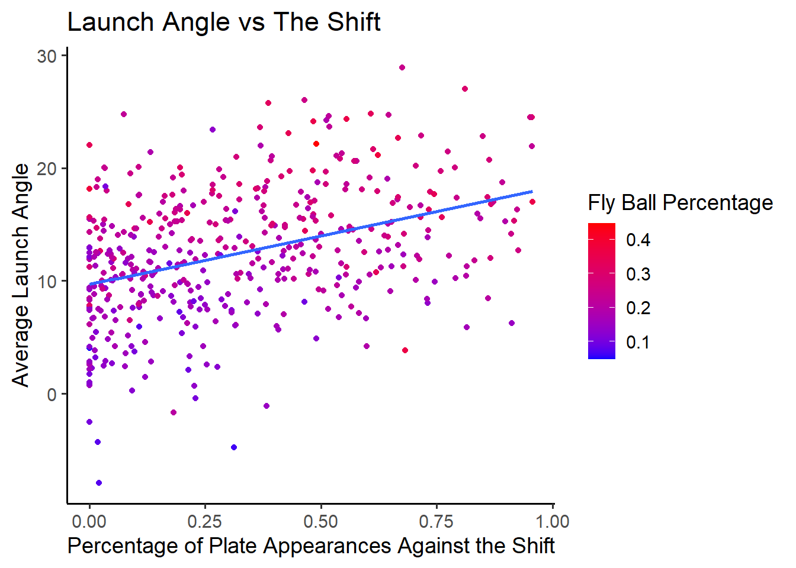
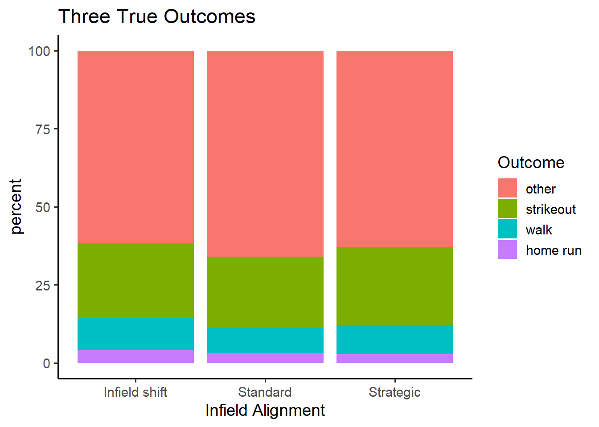
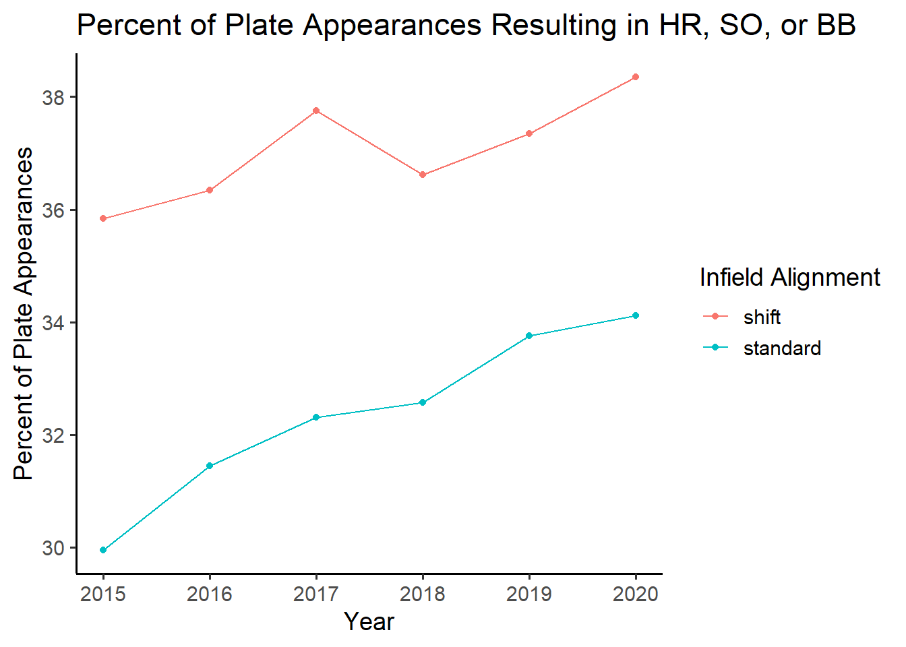

Chapter 4 Three True Outcomes
One of the complaints about the shift is that it encourages hitters to hit for power rather than contact. Since hitting a hard ground ball into the shift will likely result in an out, hitters instead try to hit it over the shift, thereby making the shift ineffective.
4.1 Launch Angle
When evaluating if the hitters are trying to hit over the shift, we should first start by taking a look at launch angle(the trajectory of ball after the batter makes contact). The shift excels at fielding ground balls and low line drives, which are the result of low launch angles. By increasing the launch angle, batters can try to hit more fly balls and higher line drives to avoid the shift.

It does seem like there is a weak correlation between a batter’s average launch angle and how often they hit against the shift. This supports the idea that batters are trying to hit the ball over the shift. Furthermore, the correlation between the two variables is 0.3894903. Understandably, there is also a correlation between a player’s average launch angle and the percentage of their batted balls that are fly balls.
4.2 Three True Outcomes
With the increase in launch angle comes an increase in fly balls. However, fly balls are usually ineffective at getting hits, with one huge exception: the home run. Some fans have criticized modern baseball for lacking action, as many plate appearances now end in either a walk, a strikeout, or a home run. These three events are referred to as the three true outcomes because they don’t involve the defense, and therefore don’t create any action. Critics of the infield shift feel that it encourages a three true outcome approach to hitting, since the hitters will try to hit home runs to counter the shift.

It seems that batters hit more home runs, draw more walks, and strike out more against the infield shift than against a standard defensive alignment. This can be attributed to the “home run or bust” mentality: Since fly balls are usually outs if they are not home runs, then its better to wait for a pitch that can be driven out of the park. If the pitch doesn’t come, just take the walk or the strikeout. This mentality is clear in the graph below.

While the league in general is trending towards more plate appearances resulting in one of the three true outcomes, the shift clearly results in more three true outcome plate appearances by about four to six percentage points, depending on the year. This divide suggests that batters who face the shift have a different hitting approach than those who do not face the shift often. It seems that the prevalence of the infield shift has caused teams to make changes to their offense.